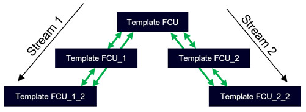
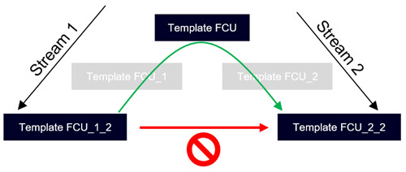

将设备实例移动到新的自定义应用程序类型
您可以将已调试的 DXR2 设备移动到更新的房间模板中，而无需重新调试（包括设备分配、数据点测试数据和设定点 /parameter 设置）。

设备可以在相同设备类型 (HW) 和相同应用程序类型的模板内移动。
在相同的 DXR2 HW （设备类型）和相同的应用程序类型（例如 HVACLgtShd12）内，可以在给定流的模板内移动设备（向上和向下）：

可以通过公共父模板将设备移动到另一个流的模板：

Move device instance to new custom app type
- In ABT Site, go to Building > Application & device overview.
- Drag the DXR2 device you want to move and drop it on another template.